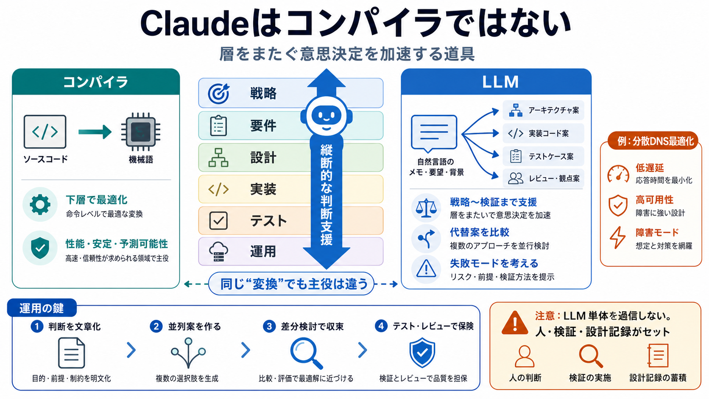

Rediscovering Architectural Decision Records
by S Kitayama · 2026 — This study proposes "sqlew," a tool that repurposes Architectural Decision Records (ADRs)-a. LLMs…

重要なのは「言語→コード」ではなく、上位から下位まで“層をまたいだ意思決定”を加速する点だ、という結論。
コンパイラという分類自体がカテゴリの誤りだ、と著者は強く確信している。ソフトウェアは「精密だが目標は曖昧」で、その曖昧さを層ごとに仕様へ増幅して解く。
層は分業のためだけでなく、情報隠蔽と組織スケールのために必要な仕組みだ。だが、断絶すると「何を聞くべきか分からない」状態が起きる。
コンパイラは主に「ソース→バイナリ」の下層で動き、インライン展開・レジスタ割り当て・最適化・警告/拒否など多数の設計判断を行う。
LLMは「自然言語→コード」だけでなく、戦略・要件・アーキテクチャ・実装・テスト計画まで複数層をまたいで支援できる。
コンパイラは下層での判断を代替する。LLMは層をまたいだ判断を“同一の道具”として扱う、というのが本稿の差分。
自社VMのDNSを速く・確実にしたい。結果、分散DNSサーバを自分たちのニーズに最適化して構築する過程が語られる。
LLMは調査、内部や歴史的脆弱性の指摘、実装代替案の比較、障害モードとテスト戦略の検討まで行う。
複数のエージェントループを並列に回し、実装案を作り、対立する決定を比較検証して最終成果へ収束させた。
価値は「コードを書いた」ことではなく、意思決定を言語化・記録して、将来も説明可能な成果物にする点にある。
成功の理由がLLM単体でなく、テスト・レビュー・設計記録・人の収束能力の組合せである可能性がある。LLMを過信して検証不足になるリスクが残る。
「LLM＝コンパイラ」ではなく、「層をまたいだ意思決定を加速する存在」と捉えるのが本稿の要点。強みを活かすには、下層を知る努力と失敗モードの把握を同時に設計する必要がある。
by S Kitayama · 2026 — This study proposes "sqlew," a tool that repurposes Architectural Decision Records (ADRs)-a. LLMs…
by EZ Wang · Cited by 146 — PlanSearch improves LLM performance on coding benchmarks significantly, and by a large margi…
Modern agentic systems increasingly rely on skills: installable packages of natural language and code that teach an LLM …
# Data Science & System Security | Publications. NEC Laboratories America heads to ACL 2026 in San Diego, California, Ju…
It focuses on software architecture, quality and development processes. The first part of this post is a lecture summary…